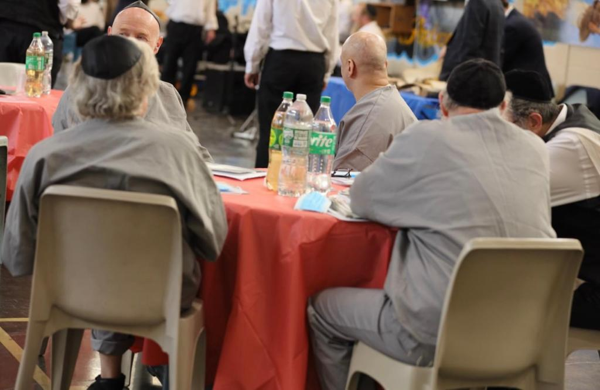

Featured · Holiday Program
Chanukah on the Island
A public menorah lighting outside the gates and candle-lightings within — eight nights of latkes, music, and the simple message that even one small light pushes back a great deal of darkness.
Dec 14–22, 2026
Rikers Island & Queens